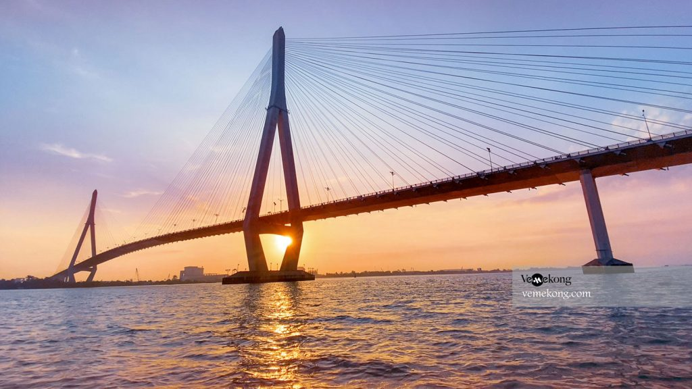

🌙 / ☀️
🎵

- Tên chính thức: Cầu Cần Thơ
- Tên gọi dân gian: Cầu Cần Thơ
- Vị trí: Nối Cần Thơ và Vĩnh Long, qua sông Hậu
- Khởi công: 25/09/2004
- Hoàn thành: 25/09/2010
- Chiều dài: 15.850 m
- Chiều rộng: 23,1 m
- Tải trọng: HL93
- Loại kiến trúc: Cầu dây văng
- Tổng mức đầu tư: Hơn 4.800 tỷ đồng
- Đơn vị thiết kế – thi công: Nhật Bản – Việt Nam
- Ý nghĩa kinh tế – xã hội: Là biểu tượng giao thông hiện đại của miền Tây.
- Sự kiện khánh thành: Khánh thành năm 2010
- So sánh: Là cầu có nhịp chính dài nhất ĐBSCL.